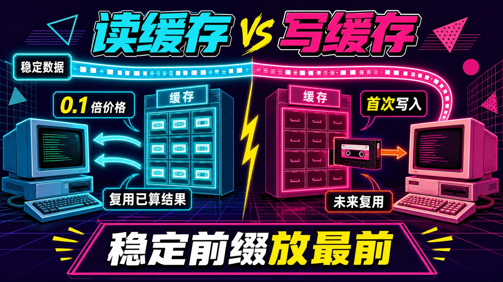
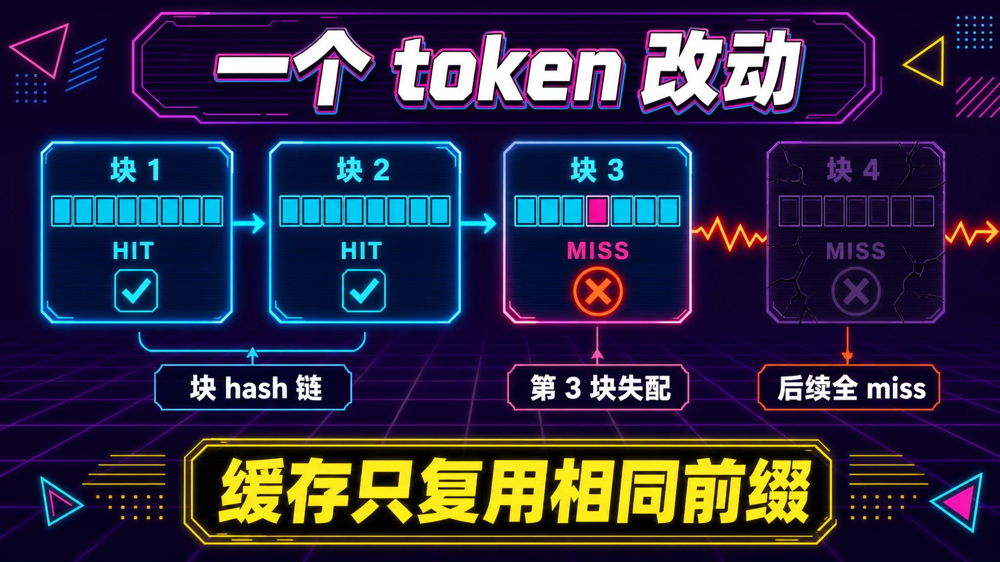
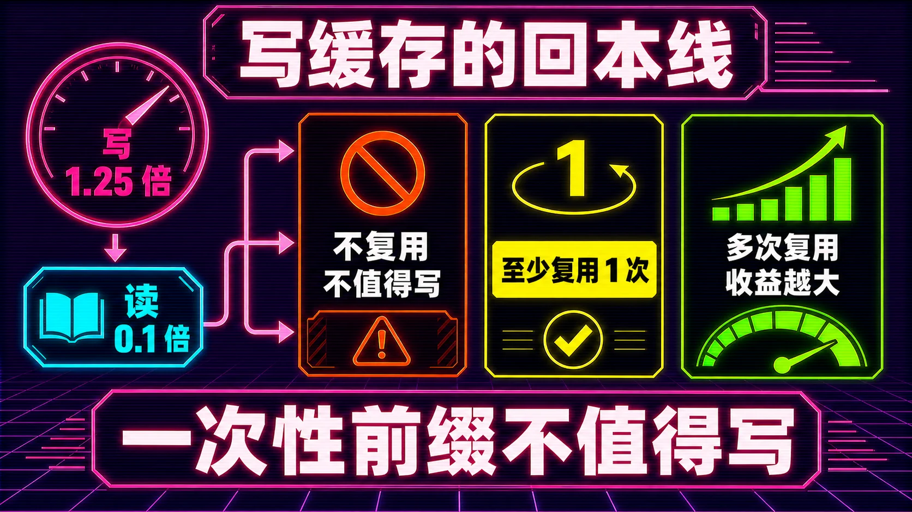
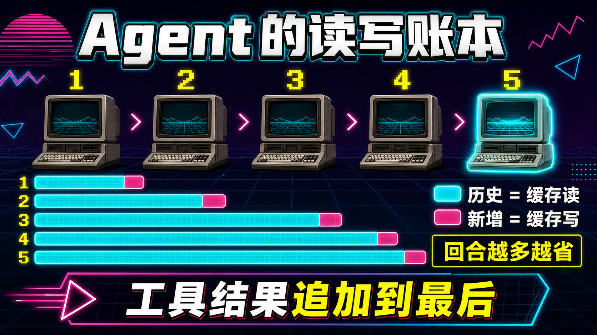
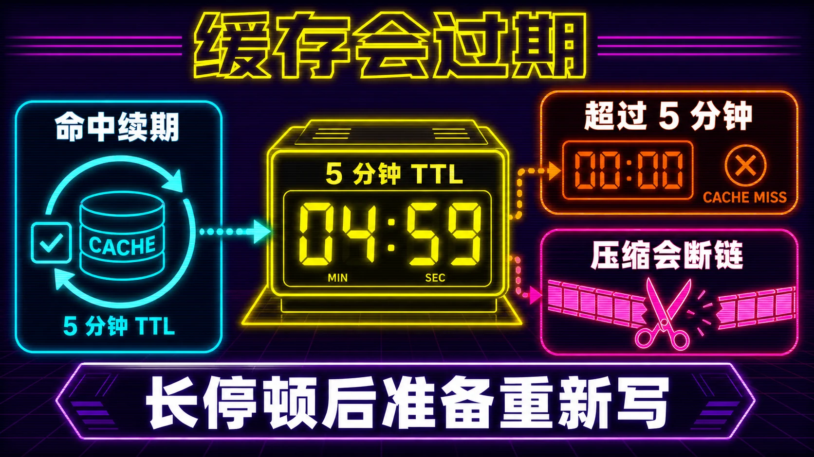

更新日期：2026/08
TL;DR： LLM 的缓存只认「逐 token 完全相同的前缀」。读缓存是拿回已经算过的内容，0.1 倍价格，只要前缀不动就必然命中；写缓存是首次把一段内容算进缓存，要付 1.25 到 2 倍价格，而且是一次投机，赌未来有人带相同前缀来读。对 coding agent，规则只有一条：稳定内容放最前（系统提示、工具定义、项目规则），易变内容追加到最后（工具结果、你的问题、时间戳）。谁把会变的东西混进前缀，谁就在为整段对话重复付全价。

假设你每天用 coding agent 写代码。每个回合，agent 要把整段对话重新发给模型：系统提示、工具定义、读过的文件、跑过的命令、之前所有对话。这段东西动辄几万到几十万 token。
缓存的作用就在这里。用对了，大头按 0.1 倍价格算；用错了，每次都是全价。
差别有多大？用 Sonnet 5 举例（2026 年 8 月的价格）：输入 $2/百万 token，缓存读 $0.20/百万，缓存写 $2.50/百万。一个 5 万 token 的稳定前缀，命中后每回合省 $0.09。一天几十个回合，一年下来是实打实的钱，更别说命中还省了首 token 延迟。
但很多人没吃满这个红利。缓存是自动的，可命中需要什么条件，多数人不清楚，也有脚手架一直在无意中破坏它。
模型处理你的提示词分两步。第一步叫预填充（prefill），把输入里每个 token 都读一遍，算出它和前面所有 token 的关系，存成一组中间数据；第二步叫解码（decode），一个 token 一个 token 地生成输出，每生成一个都要回头查一遍这组数据。
缓存的对象，就是预填充算出来的那组中间数据，行话叫 KV cache。要理解它，得先知道注意力机制在干嘛。你可以把每个 token 想成房间里的人，它手里举着两块牌子。一块是 key，写着「我是谁，我带着什么信息」；另一块是 value，是它真正想说的内容。新生成的 token 手里举着 query，写着「谁跟我相关」。它要挨个问一遍房间里的人：你的 key 跟我的 query 配不配。配上的，就把 value 拿过来加权求和。
问题在于，这个「挨个问一遍」的成本是平方级的。第 1 个 token 只需要问 1 个人，第 1000 个 token 要问前面 999 个人。如果每生成一个 token 都把前面所有人的 key、value 重新算一遍，成本高得离谱。KV cache 把这些 key、value 存下来，谁要问，直接查表，不再重算。
所以两阶段的成本结构完全不同：
缓存干的事，就是让「预填充的结果」跨请求复用。这次请求算过的一段前缀，下次发一模一样的，直接把算好的 key、value 拿出来用，跳过整段重算。
一家复印店，每次复印都要从头扫描整份文件。店主装了个文档柜省钱。
你第一次拿来一份 100 页的文件，店员扫完存进柜子，收 1.25 倍的钱（扫描加存档）。之后你再来，拿一模一样的 100 页，店员直接复印存档，收 1/10 的钱，还快得多。这就是读缓存。
柜子有三个坑：
第三点最重要，也最容易被忽略。
这是缓存的底层实现决定的。服务端把缓存切成固定大小的「块」（block），每块的身份是一个 hash，由三部分算出来：前一块的 hash、本块的所有 token、一些附加信息。像一串链条，第 N 块的身份包含第 N-1 块的身份。
所以第 3 块改一个 token，第 3 块的 hash 变了，第 4 块因为包含了第 3 块的 hash 也跟着变，一路连锁到结尾。匹配时逐块比对 hash，从第一个失配块开始全部 miss。
这解释了两个现象：
vLLM 的实现里还藏了个细节：只有装满了的「整块」才进缓存，末尾的半块不缓存。如果你的共享前缀刚好不够一个整块，一样白搭。
假设块大小是 4 个 token。请求 A 的前缀是「系统提示 + 项目规则」，拆开是：
块 1: [sys, token2, token3, token4]
块 2: [rule1, rule2, rule3, rule4]
块 3: [你的问题……]第一块算完存进缓存，hash 记作 H1。第二块算完，它的 hash 是 H2 = f(H1, rule1, rule2, rule3, rule4)，包含了 H1。第三块是你的问题，不在共享范围内。
现在请求 B 来了，系统提示一字不差，但项目规则里你把 rule3 改成了 rule3'。匹配时逐块对：
请求 B 只吃到前 4 个 token 的缓存。你改的只是一个词，但这一个词在第 2 块里，后面所有内容跟着陪葬。
还有一层更隐蔽的坑：共享内容必须对齐到块边界。假设请求 A 和 B 共享了前 10 个 token，块大小 4。块 1、块 2 各 4 个，命中 8 个；第 10 个 token 在第 3 块里，但第 3 块只有 2 个 token 是共享的，凑不满一个整块，不缓存。所以你们明明共享了 10 个 token，实际命中的只有 8 个。这也是为什么官方建议把大段稳定内容堆在一起，别让共享前缀刚好卡在半块上。

读的命中由你控制，写的命中由未来控制。
读是确定性的。你只要保证每次发的前缀跟缓存里那份逐 token 一致，就一定能命中。要不要命中，是你自己的自律问题。
写是投机性的。你付溢价创建一条缓存，但这条缓存会不会被未来的请求读到，取决于未来有没有人带着相同前缀来。你控制不了。
写缓存白花一般就两种。一种是前缀只出现一次：一次性的长文档、一次性的任务描述，写进缓存后没人再发相同前缀。另一种是前缀被改：前面讲过，一个 token 的差异就让整条链失效，最典型的是往系统提示里塞时间戳、当前目录、随机会话 ID，这些一变，整段历史全 miss。
另外有个硬门槛：缓存有最小长度。Anthropic 这边，Opus 5 最低 512 token，Sonnet 5 最低 1024 token，Haiku 4.5 最低 4096 token。短于门槛，缓存根本不生效，usage 里两个缓存字段都是 0。OpenAI 是 1024 token 起步，DeepSeek 也有类似的「缓存前缀单元」门槛。太短的前缀写不进缓存，也就不存在命中。
反过来，读为什么容易命中？因为读的本质是复用同一份字节。你只要把不变的东西放前面，把会变的东西放后面，命中率天然就高。这是缓存设计里唯一重要的规则。
上一节说写是投机，但投机不等于一定亏。什么时候值得写，其实是一道算术题。还是用 Sonnet 5 的价格：输入 $2/百万 token，缓存写 $2.50/百万（1.25 倍），缓存读 $0.20/百万（0.1 倍）。
假设你的稳定前缀是 5 万 token。三种情况：
写价 1.25 倍，比全价 1 倍还高。所以一次写如果换不来至少一次读，就是纯亏，而且比假装没缓存更亏。写要回本，得让前缀被重复使用。读的次数越多，摊得越薄，这也是为什么越长的 agent 会话单位成本越低。
把判断条件列出来，写缓存值得做，需要同时满足三条：
三条里最容易翻车的是第三条。很多人以为系统提示是稳定的，结果脚手架里藏了个 datetime.now()，每次请求都变，整个缓存链天天全 miss。

把上面的机制套到 coding agent 上，会得到一个特别有利的结构。
agent 每个回合发送的完整上下文，顺序是：工具定义、系统提示、全部历史对话（包括 assistant 的 tool_use 调用块和工具返回结果）。Anthropic 官方文档直接说了：在 agent 循环里，每次工具往返都会重新发送完整对话，前面的全部走缓存读，只有新追加的工具结果走缓存写。
也就是说：
结果是读写比越来越好，单位成本越来越低。这是 agent 能吃到缓存红利的结构性原因。
拿一个具体场景走一遍，比抽象描述直观得多。假设 agent 在修一个登录页的 bug，会话一共 5 个回合。
固定前缀：系统提示 + 工具定义 + 项目规则，共 8000 token，全程一字不改。每个回合 agent 追加的内容：你的指令、它读的文件、命令输出，加起来平均 2000 token。价格用 Sonnet 5（写 $2.50/M，读 $0.20/M，全价 $2/M）。
| 回合 | 新增 | 缓存读 | 缓存写 | 成本 |
|---|---|---|---|---|
| 1 | 2000 | 0 | 10000 | 10000 × $2.50/M = $0.0250 |
| 2 | 2000 | 10000 | 2000 | $0.0020 + $0.0050 = $0.0070 |
| 3 | 2000 | 12000 | 2000 | $0.0024 + $0.0050 = $0.0074 |
| 4 | 2000 | 14000 | 2000 | $0.0028 + $0.0050 = $0.0078 |
| 5 | 2000 | 16000 | 2000 | $0.0032 + $0.0050 = $0.0082 |
5 个回合累计 $0.0554。如果完全没有缓存，每回合都是全价：第 1 回合 $0.02，第 5 回合输入涨到 18000 token、$0.036，累计约 $0.14。省了一半还多。
注意第一回合最贵。它是一次大额写，后面才开始赚回来。这就是为什么「预热」很重要：如果第一回合实际是给长任务打底，这一笔写是必须的；如果是真正的一次性请求，这笔写就亏了。区分点就在这个前缀以后还出不出现。
再想象一个反面例子：同一个会话，但某个脚手架每回合往系统提示里塞一个 datetime.now()。前缀每回合都变，缓存链从第一块就断，全部退回全价。同样是 5 回合，成本涨到 $0.14，两倍多。你什么都没做错，就是那个时间戳在放血。
最贵的错误是往系统提示里塞会变的东西。 有些 agent 或脚手架会把当前时间、cwd、git 状态、随机生成的会话 ID 动态拼进系统提示。系统提示在缓存链的最前面，它一变，后面整段历史全 miss。这个错误最常见，也最贵。
工具定义频繁变是另一个。工具定义也属于前缀，动态生成工具、每次请求都改 tool 定义的 agent 框架，一样不停破坏缓存。工具定义要稳定，改就攒批改。

前面一直说「前缀」，但服务端怎么知道哪部分是前缀、哪部分是尾巴？答案是断点。
缓存只覆盖「断点之前」的内容，断点之后的部分不缓存。断点是一个标记，你告诉服务端：从这个位置往前的所有内容，都算稳定前缀，要缓存；从这个位置往后，算可变尾巴，不缓存。
两个服务商的默认策略不一样：
你也可以手动放断点，精确控制。Anthropic 最多 4 个断点，适合不同部分按不同频率变化的情况：工具定义几乎不变，系统提示偶尔变，对话每次变。三个断点正好对应三档。
放断点的方式是在内容块上标 cache_control。用 Claude 的 Python SDK 举个例子：
from anthropic import Anthropic
client = Anthropic()
response = client.messages.create(
model="claude-sonnet-5",
max_tokens=1024,
system=[
{
"type": "text",
"text": "你是这个仓库的资深工程师，回答要直接，给结论再给代码。",
},
{
"type": "text",
"text": open("CLAUDE.md").read(), # 项目规则，大段稳定内容
"cache_control": {"type": "ephemeral"}, # 断点放这里
},
],
messages=[
{"role": "user", "content": "登录页的 session 校验在哪？"},
],
)
print(response.usage)
# Usage(cache_creation_input_tokens=2513, cache_read_input_tokens=0,
# input_tokens=18, output_tokens=64, ...)第一次请求，CLAUDE.md 的 2513 个 token 全被写进缓存。第二次请求，只要 CLAUDE.md 没变、系统提示没变，这 2513 个 token 就变成缓存读了，只有 input_tokens（你的问题）按普通价格算。
有个容易忽略的点：断点标记在「最后一个不变的块」上，而不是第一个会变的块上。你需要在请求之间共享的那段稳定内容，正好截止到断点。如果断点放得太靠前，稳定内容在断点后面，缓存反而吃不到；放得太靠后，把会变的内容也圈进了写区，每次多付写价。
系统往回找缓存条目时有个回溯范围：Anthropic 最多往回找 20 个块。对话超过 20 个块还找不到上次的断点，就需要在中间补一个断点，让系统有地方积累缓存写。
工具定义也一样可以缓存。把 cache_control 标在 tools 数组里最后一个工具上，前面所有工具定义都被圈进缓存。代价是任何工具定义变动都会让相关缓存失效，所以动态生成工具定义的框架要小心。
先看一个隐蔽的：OpenAI 的自动缓存默认把断点放在「最新的 user 或 tool 消息」处。两个请求共享一段很长的静态前缀，但只要后面内容不同，就可能显示 cached_tokens: 0，共享的部分一点没吃到缓存。原因是默认断点把写缓存的位置推得太靠后，动态内容被算进写区，反复付写价。用显式断点（prompt_cache_breakpoint）把缓存区切在稳定内容的末尾，再配合 prompt_cache_key 做路由，才吃得着。GPT-5.6 之后写缓存开始收费（1.25 倍），这个坑从浪费速度变成了浪费钱。
并行请求是另一个。缓存条目要等第一个响应开始之后才可用。并发发 10 个请求，这 10 个全是 miss。先让第一个请求跑起来，后面的并行请求才吃得到缓存。
最狠的是上下文压缩。压缩用一段新生成的摘要替换整段旧对话，两步都伤。
先看数字。假设会话已经长到 8 万 token，逼近上限，触发压缩。模型生成一段 5000 token 的摘要，把 8 万 token 的对话浓缩掉。压缩后上下文变成「5000 摘要 + 新指令」。
伤在缓存，也伤在内容。缓存这边有两层。这 5000 token 摘要是一段全新字节，之前从没被算过，纯 miss，而且是一次大额写，按写价算。更麻烦的是摘要之后的后续内容，前缀全部变了，之前花 8 万 token 一点点累积起来的缓存链，从摘要这里整个断掉，全部作废。内容那边同样隐蔽：Codex 的远程压缩只保留 user/developer/system 消息，丢掉 assistant 的回复和工具调用细节。关键决策如果只存在于被丢掉的 assistant 消息里，压缩后模型直接失忆。
省的是上下文空间，赔上的是缓存连续性和对话保真度。两者一起丢。所以压缩的正确用法是救急，不是日常。日常维护上下文，用后面讲的追加加截尾和外部记忆。
缓存条目不是永久有效的。Anthropic 默认的缓存寿命是 5 分钟，过了就清掉。但有个重要的细节：每次命中，会免费把寿命从命中那一刻重新计时。只要你用它的频率超过每 5 分钟一次，它就一直在。
用时间线走一遍：
| 时间 | 事件 | 缓存状态 |
|---|---|---|
| 08:00 | 请求 1，前缀写入 | 寿命到 08:05 |
| 08:04 | 请求 2，命中，寿命刷新 | 寿命到 08:09 |
| 08:11 | 请求 3，命中，寿命刷新 | 寿命到 08:16 |
| 08:20 | 请求 4 | 08:16 已过期，全 miss，重新写 |
注意 08:11 到 08:20 之间隔了 9 分钟，超过 5 分钟，中间没有任何请求。缓存就过期了。
对 coding agent 来说，这等于一个隐形约束：单个回合如果超过 5 分钟没发请求，缓存就凉了。 agent 里什么会让回合停顿超过 5 分钟？跑测试、等 CI、等人工审批、一次很慢的工具调用。这种长停顿之后，下一回合回到全价。
两个应对办法：
还有个和 TTL 配套的机制叫预热。第一次请求是纯写，最贵。如果你知道这段前缀接下来会被大量复用，可以先发一个 max_tokens: 0 的请求，只把前缀算进缓存、不生成输出，等后面的真实请求直接命中。注意预热只对显式断点有效，自动缓存在预热这种占位请求上不生效。

不需要懂实现，记住几条操作就行。
如果你在写 agent 框架或者搭自己的 agent，这几条是设计约束，不只是习惯。
cache_control 把断点明确放在稳定层末尾，别靠自动。已知会被大量请求共用的前缀，先发一个 max_tokens: 0 的请求预热，让第一条真实请求就命中。注意预热只对显式断点有效。cache_read_input_tokens 和 cache_creation_input_tokens 打出来。命中率上不去，先看系统提示里有没有会变的东西；写价比太高，看断点是不是被自动推进到了动态内容后面。每次请求的 usage 里都带这三个字段，统计起来很简单：def report(usage):
read = usage.cache_read_input_tokens
written = usage.cache_creation_input_tokens
plain = usage.input_tokens
total = read + written + plain
hit = read / total if total else 0
print(f"总输入 {total:>7,} | 命中率 {hit:>4.0%} "
f"| 读 {read:>7,} | 写 {written:>6,} | 裸 {plain:>6,}")一个健康的 agent 会话，命中率应该随对话增长往 90% 以上爬。如果长期徘徊在 50% 以下，别先怀疑模型，先查前缀里有什么在变。
缓存优化有边界，别过度。
mode: "explicit"，设了就不自动写。